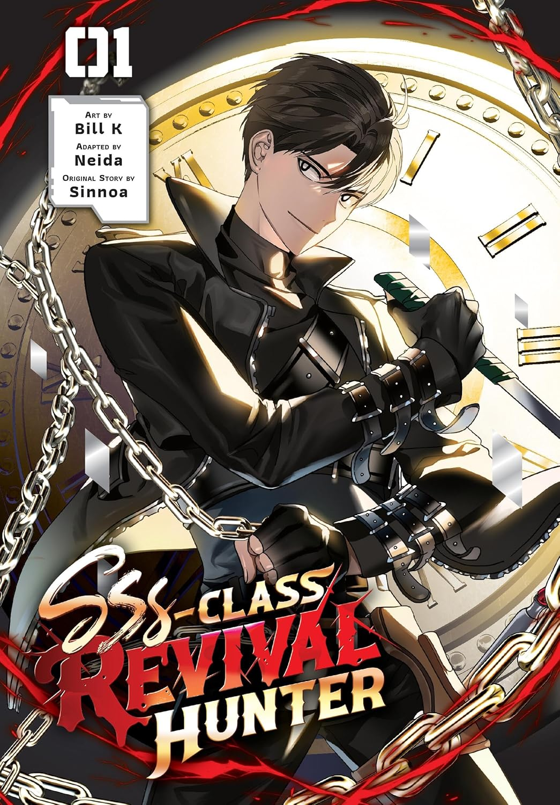
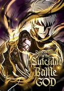
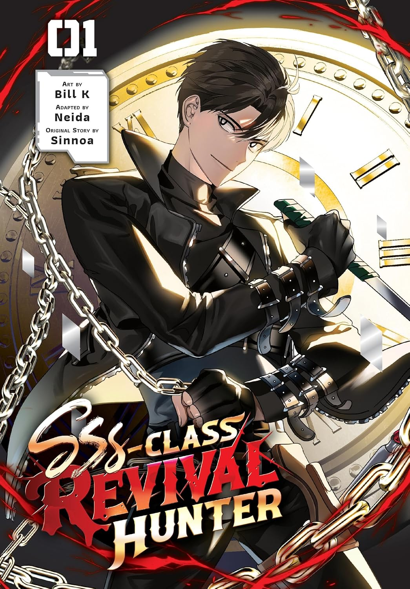
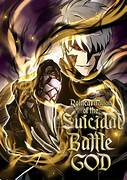

For me, reading has never been about memorizing plot points or dates; it is about the visceral, fleeting emotions that surge through me with every turned page. My library is a chaotic reflection of this curiosity, ranging from the technical wonders of physics textbooks to the immersive worlds of light novels. I find myself deeply drawn to the mysteries of the cosmos, losing myself in the silent, terrifying beauty of black holes and the vastness of our solar system.
Yet, I am equally captivated by the vibrant landscapes of Manhwa, particularly where the high stakes of the Isekai genre meet the tender complexities of romance. While titles like The Beginning After the End and The Villainess is Destined to Die have left their mark, I am most moved when these worlds collide; for me, SSS-Class Revival Hunter stands at the pinnacle of storytelling, closely followed by the relentless intensity of Reincarnation of the Suicidal Battle God.
Beyond the art of Manhwa, I find my ultimate sanctuary in the depth of Light Novels. There is a specific kind of intellectual and emotional weight found in masterpieces like Lord of the Mysteries and Omniscient Reader’s Viewpoint that stays with me long after I’ve finished them. These stories aren't just entertainment; they are experiences that challenge my perception of reality and destiny, anchoring themselves in my heart not as mere facts, but as profound feelings that define my journey as a reader.
<<< >>>